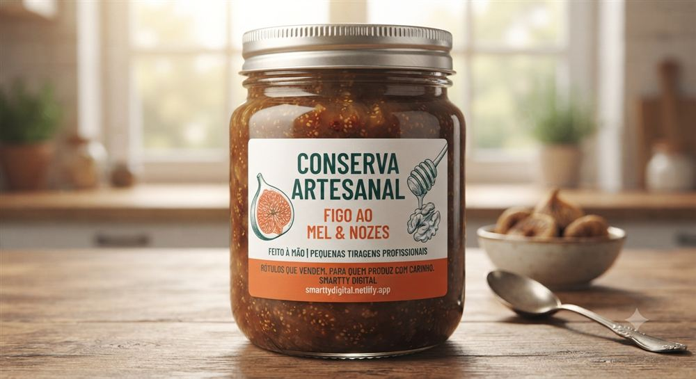
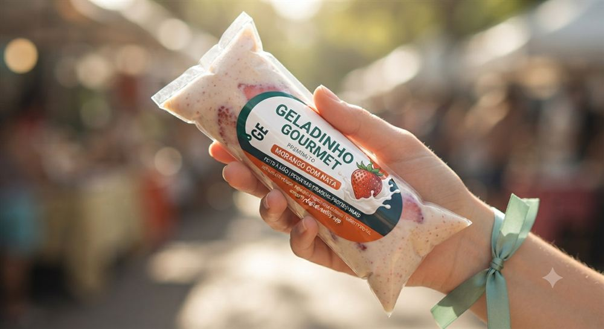
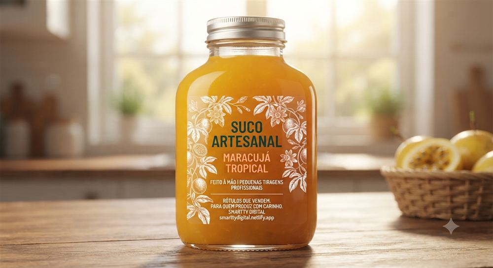
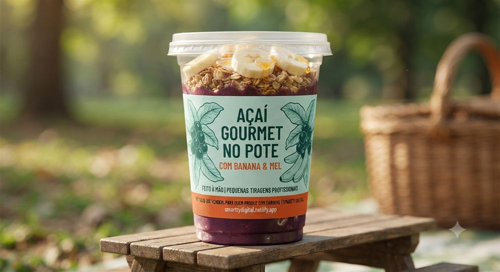

Você já perdeu uma venda — ou uma cliente — porque o rótulo do seu produto saiu da geladeira todo enrugado, manchado ou simplesmente caiu? Não é falta de cuidado seu. É o material errado pro trabalho errado.
Geleia, conserva, geladinho gourmet, suco artesanal, açaí no pote — qualquer produto que precise ficar refrigerado ou congelado exige um tipo específico de rótulo. Um rótulo comum, feito pra ficar numa prateleira seca, simplesmente não aguenta.
Por que o rótulo comum não resiste
A geladeira e o freezer combinam dois inimigos do papel: umidade constante e variação de temperatura. Toda vez que a porta abre e fecha, o ar em volta do produto muda de temperatura — e isso gera condensação bem em cima do rótulo.
Papel comum absorve essa umidade, incha, e a cola perde a força. O resultado: os cantos descolam primeiro, depois a etiqueta inteira solta — ou pior, a tinta borra e o produto passa uma impressão amadora justamente na hora em que a cliente mais está olhando pra ele.
O que realmente resolve: BOPP + cola acrílica
A solução não é um material milagroso, é a combinação certa: BOPP (polipropileno biorientado) como base, com cola acrílica no lugar de colas comuns.
O BOPP não é papel — é um filme plástico que não absorve água, então não incha nem enruga com a umidade da geladeira. Já a cola acrílica é diferente das colas tradicionais: ela não fica quebradiça com o frio nem perde a aderência com a condensação, então o rótulo continua exatamente onde deveria.
Na Smartty, os rótulos são impressos com tecnologia de impressão digital a laser em BOPP com cola acrílica — resistente a água e óleo por padrão, sem custo extra por essa resistência.




Funciona pra qualquer produto que precise de geladeira ou freezer — geleias, conservas, geladinhos gourmet, sucos, açaí no pote, e por aí vai. Veja outras soluções pra rótulos para alimentos artesanais.
Qual material escolher pro seu produto
Isso muda um pouco conforme o efeito que você quer: o BOPP fosco tem toque aveludado e sofisticado, o BOPP brilho traz cores mais vivas e chamativas, e o transparente cria aquele efeito "sem rótulo" que deixa o produto aparecer através do vidro. Todos resistem a água e óleo do mesmo jeito — a diferença é só estética.
Não dá pra saber de longe qual combina melhor com o seu produto sem ver ele de perto. É por isso que a Manu, nossa consultora, te ajuda a escolher com base no que você está produzindo — sem enrolação e sem termos técnicos.
Bora garantir que seu rótulo aguenta a geladeira?
Fale com a Manu no WhatsApp e descubra o material ideal pro seu produto — ela te orienta 24 horas por dia, todos os dias.
💬 Falar com a ManuE não precisa arriscar um estoque grande pra testar: na Smartty, a tiragem começa em 50 unidades por modelo. Dá pra experimentar o material certo antes de comprometer o caixa com milhares de rótulos.
← Voltar pro blog